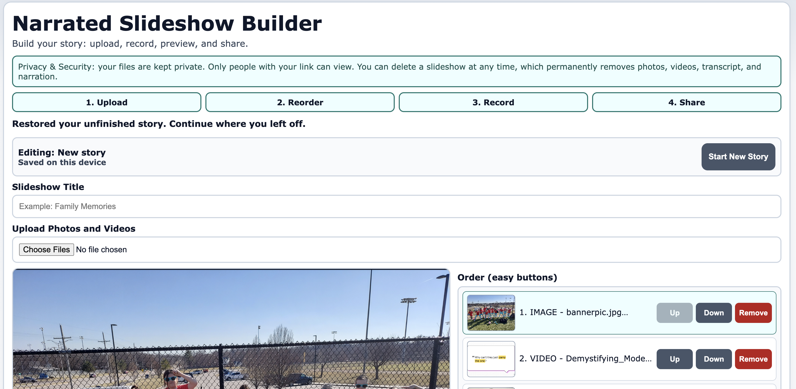

A family member asked for something simple: she had educational photos and videos from a trip and wanted to narrate them into a slideshow for an elementary class. Not a startup. Not a product launch. Just a real person with a real need.
My first instinct could have been the usual path: research tools, compare pricing tiers, watch tutorials, test workflows, and teach someone a new app. Instead, I asked AI coding agents to build exactly what she described.
What happened
I used OpenClaw as the center of the workflow, and OpenClaw used Codex, Claude, and Kiro for different scoped tasks and iteration loops. I reviewed output and kept tightening the UX around one user profile: someone who just wants this to work without technical friction.
I used AWS CLI in the workflow to wire up and ship changes quickly as we iterated.
Overnight, most of the implementation landed. Then it took about an hour of back-and-forth prompting to tune behavior, fix rough edges, and make it usable for her.
End result: she had a working solution faster than we would have finished researching and learning a brand-new tool.

Why this worked
This was a classic personal software problem:
- The requirements were clear and narrow.
- The user mattered more than generic “best practice” defaults.
- The scope did not require enterprise-grade scale.
- Fast iteration was more important than marketplace feature breadth.
When those conditions are true, building the exact fit can be quicker than evaluating ten almost-fit tools.
Technical takeaways
- Prompting is now a build interface. If you can break work into concrete tasks, you can coordinate agents like a lightweight team.
- Keep architecture simple. Static frontend + serverless backend + object storage gets you far for personal software.
- Optimize for trust, not features. Autosave cues, obvious buttons, and clear status messaging matter more than “advanced settings.”
- Treat scale honestly. You do not need full commercial architecture to solve a family workflow.
When this is the wrong approach
This approach is not universal. If you need strict compliance, heavy multi-tenant security, large operational scale, or deep team support, choose mature products or invest in full engineering rigor from day one.
But for personal software, small-team workflows, and custom one-off needs? The speed curve has changed.
The key point
Personal software is now easy to spin up. In the right context, creating your own exact-fit tool is faster than researching what software to use and teaching someone how to adapt to it.
If you are curious, I published the cleaned-up reference project here: